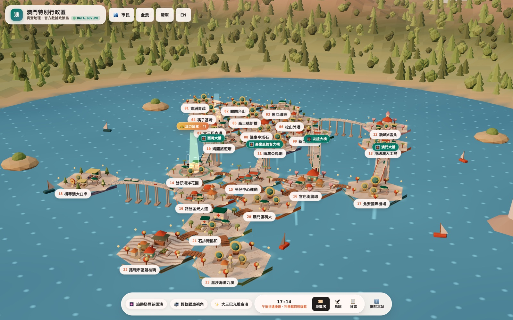
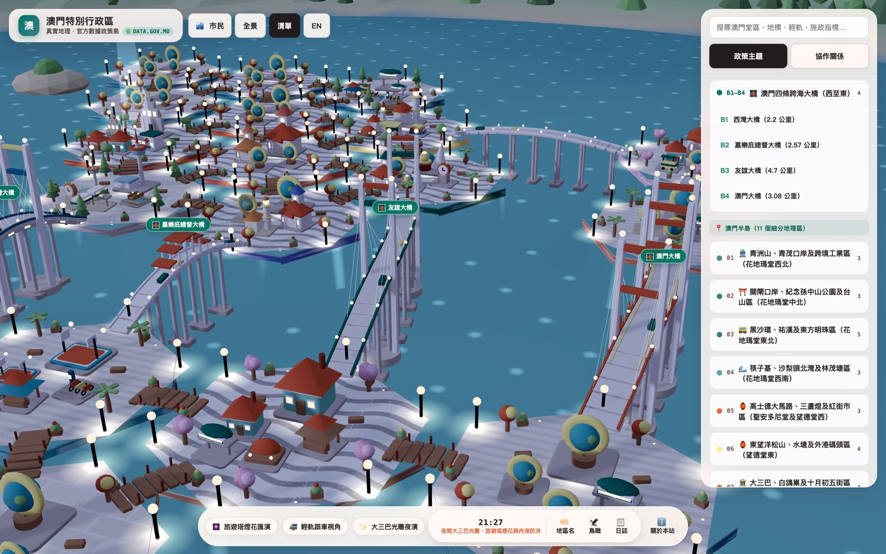
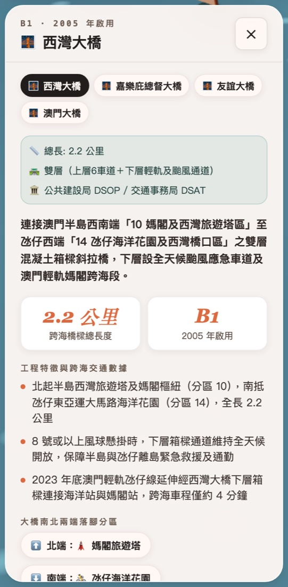
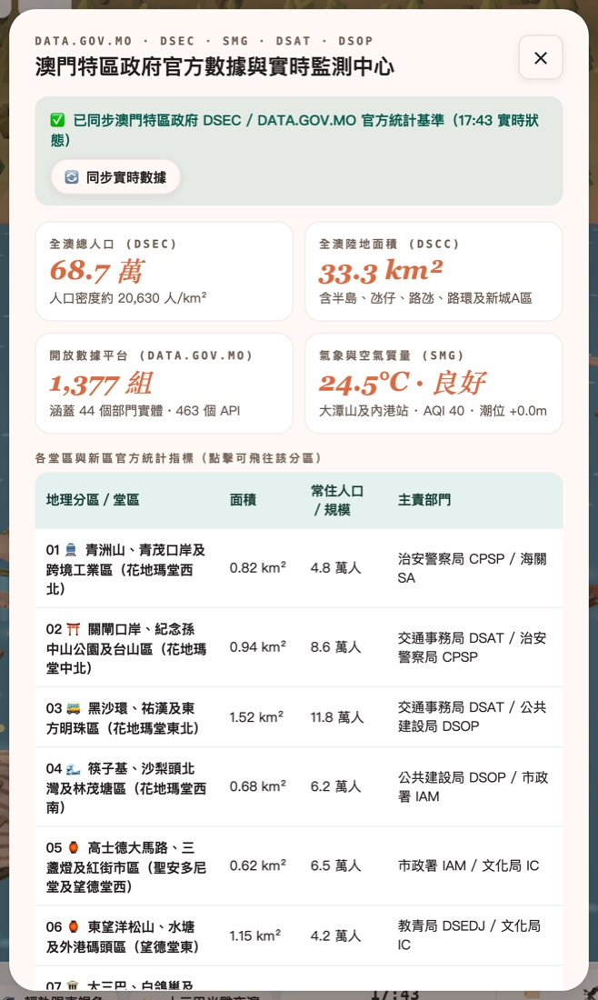
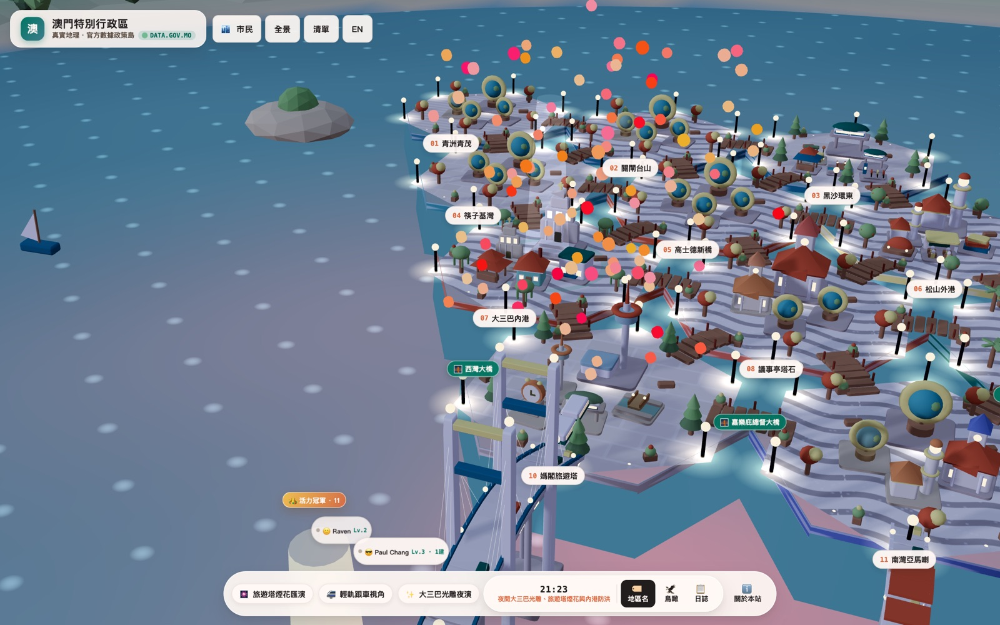
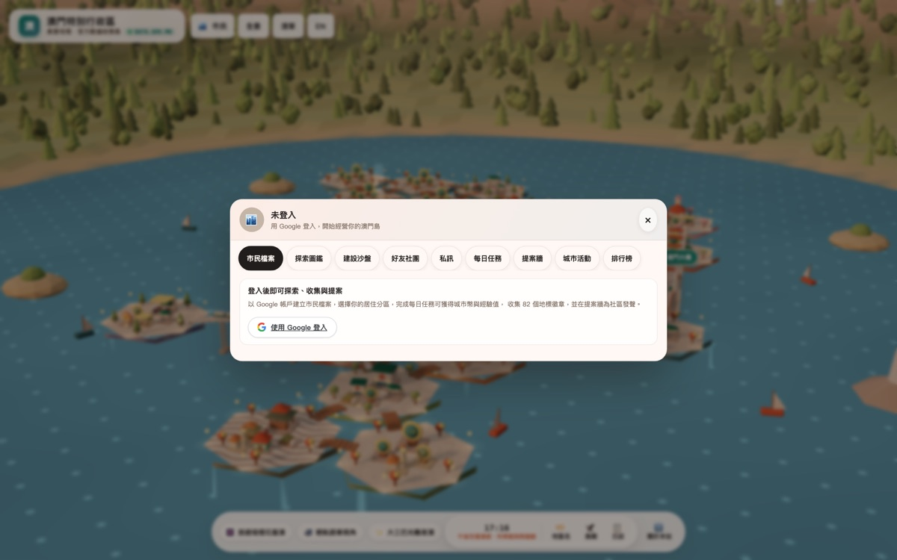
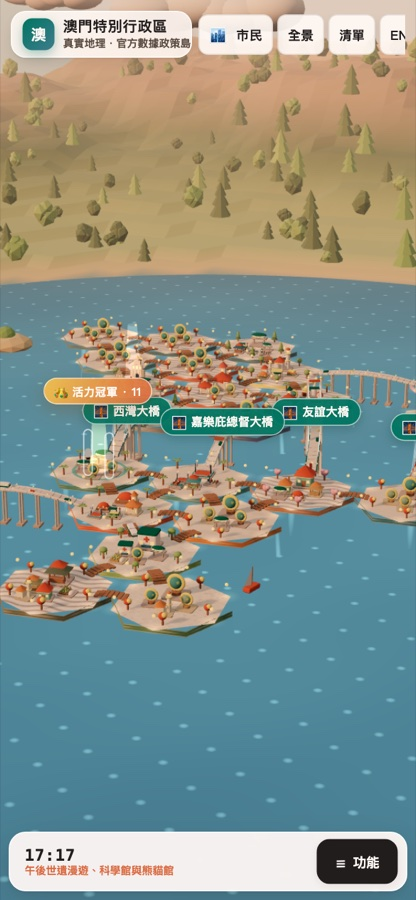
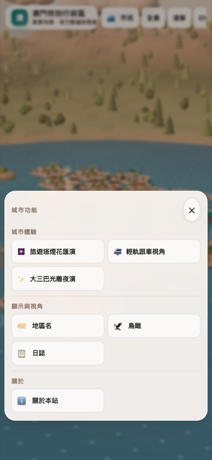
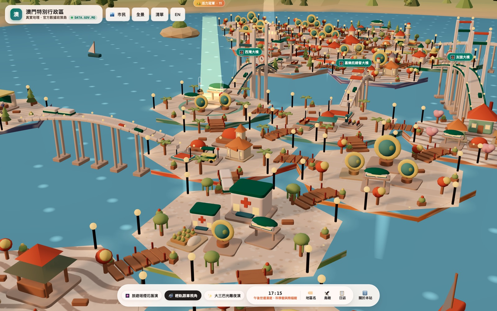
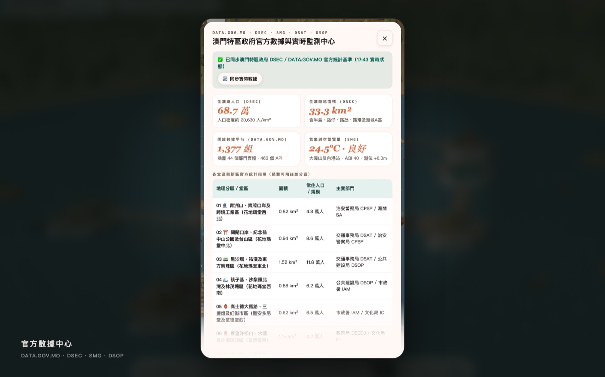

數據沉在 PDF 與表格
市民、記者、學生要自己拼圖，睇兩眼就放棄。
分區與地標直接綁定人口、面積、工程進度，點一下即出詳情卡。23 個分區、82 個地標、四條跨海大橋與三條輕軌，全部即時 3D。 政府用來講施政，學校用來教地理，商場與品牌用來做活動—— 一個連結，電腦與手機都開得。
無需安裝 · 支援桌面與手機 · 可離線匯出單檔示範

我們把八個常見痛點，逐個變成可以即場示範的功能。
市民、記者、學生要自己拼圖，睇兩眼就放棄。
分區與地標直接綁定人口、面積、工程進度，點一下即出詳情卡。停留時間短，發佈完就無人再返嚟。
探索任務、城市幣、等級與排行榜，把一次瀏覽變成每日回訪。實體沙盤一次投入數十萬，改內容又要再付費。
網頁版 3D 沙盤，內容改資料庫即全站同步，可投影也可手機。來來去去都是同一批照片，缺打卡話題。
四項即時城市體驗：煙花、光雕、輕軌第一視角、潮位防洪。回收率低、一次性，之後無從跟進。
提案牆、投票、分區建設與活力榜，形成持續參與循環。表單報名、紙筆簽到，數據永遠對唔上。
城市活動模組：名額、報名、現場簽到、自動發獎同一資料庫。每個模組都可以單獨抽出嚟用：做活動、做教材、做官網入口、做展館大屏。

依真實經緯度切分 23 個分區，82 個地標、四條跨海大橋、三條輕軌路線全部程序化建模，無外部模型檔。


點開即見長度、車道、啟用年份、責任部門、規劃年份與三條重點數據；流線更具備證據等級。

旅遊塔煙花、大三巴光雕、輕軌跟車第一視角、內港潮位防洪模擬，全部即時觸發，適合大屏、直播與發佈會。

Google 登入即建立市民卡，探索、任務、建設、點讚、提案全部有回報，數據同時成為營運儀表板。


手機底部只有澳門時間與「☰ 功能」，點擊彈出分組選單，兩欄排列、不能左右拖動，點任何功能自動收起。
16 個部位 × 8 組顏色自由組合，即時同步到 3D 地圖，天然產生分享截圖。
12 格用地、10 種設施、5 級解鎖，建設成果即時以 3D 模型出現在所屬分區。
活力＝建設＋點讚×2＋探索數；前三名有金銀銅光柱，冠軍有浮動徽章。
六類提案、按分區與支持數排序，每人每日最多 3 篇，意見可直接匯出。
打招呼、巡訪沙盤、社團共同目標，每週達標全員獲獎勵。
報名、名額、現場簽到、自動發獎；管理後台可調整市民與活動。
以下全部由線上版本直接截取，可即場對照操作。

跟隨列車由媽閣跨海到氹仔碼頭，適合交通政策與旅遊推廣。

68.7 萬人口、33.3 km²、1,377 個數據集，一頁睇完並可跳轉官方來源。
這個五步循環，是整個產品的回訪引擎，也是商業提案的核心。
由部門展示到商場導流，每個場景都有明確做法、成果指標與合作模式。
以下為建議區間，實際按客製範圍、資料量與維護期調整。
加購：客製 3D 建築／新地標、雙語文案、大屏模式、KOL 素材包。所有方案均可先做 15 分鐘線上示範。
帶機示範最好；現場網絡不穩時，可先開好分頁或使用離線單檔版。
開首頁旋轉城市：介紹 23 分區與真實地理位置。
開清單點西灣大橋：長度、車道、啟用年份、連接分區。
點左上角品牌卡：68.7 萬人口、1,377 個開放數據集。
放煙花 + 光雕：示範節慶、發佈會與商場活動場景。
市民中心：排行榜、建設沙盤、公仔建構器與分享素材。
手機版實測，收尾問：「你最想先解決邊個場景？」
官網負責「睇」，3D 沙盤負責「玩」。可以只嵌入一個區塊或獨立活動頁，不需要取替現有網站。
全部程序化生成，沒有大型模型檔；具備 LOD 與幾何合併，桌上電腦與手機都可流暢運行，可即場用你的電話實測。
分區與地標資料在資料庫，一次更新全站同步；活動、市民、獎勵可在管理後台即時調整。亦可選擇由我們代維。
前端是一個 HTML，後端是一個 Node 服務與 PostgreSQL；可部署在你自己的雲端，我們提供部署腳本與文件。
地圖告訴你「在哪裡」；我們告訴你「這裡發生什麼、有什麼政策、你可以怎樣參與」，而且可以玩。
每日任務、每週社團目標、分區活力榜三個周期同時推動回訪；節慶日自動煙花亦會帶來自然回流。
基準來自 DATA.GOV.MO、DSEC、SMG、DSOP，頁面標明更新時間；亦可接入你部門的內部數據源。
告訴我們你最想解決的場景，我們用你所在的分區做一個即場示範。
Paul Chang · NexusLink Tech · paul@ebeesnet.com